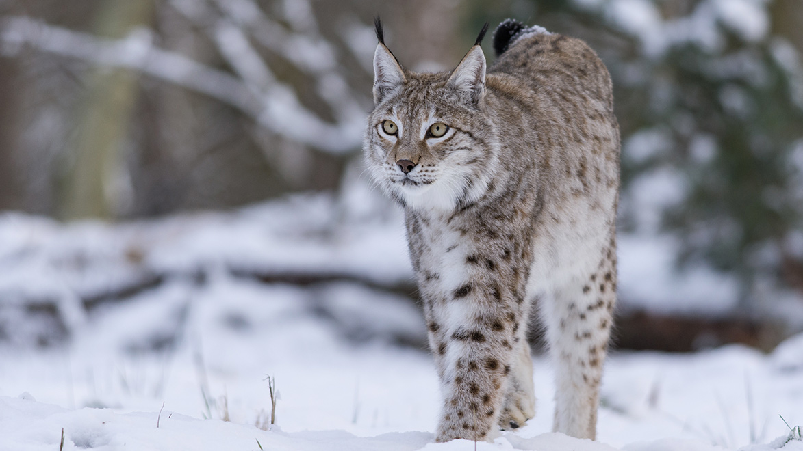
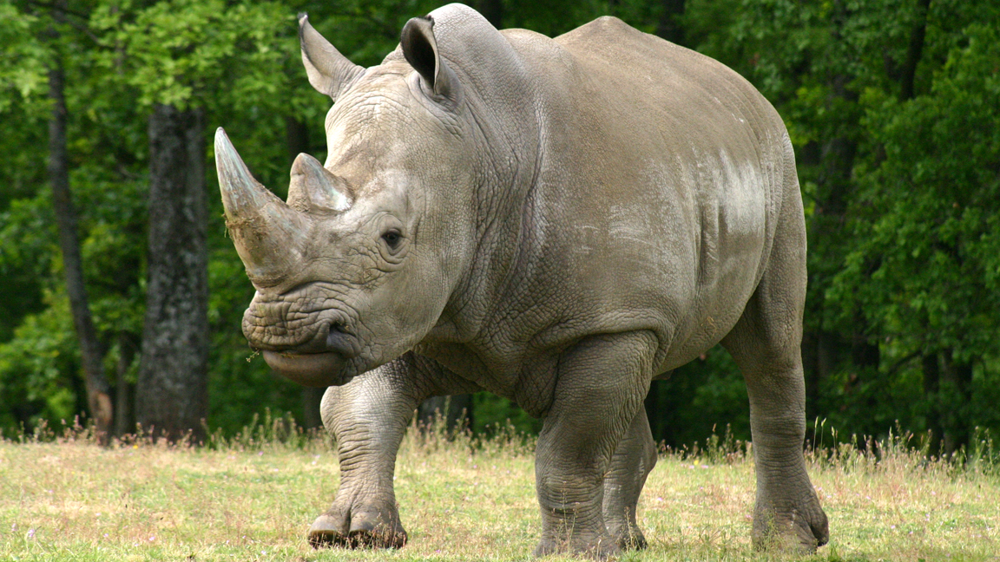
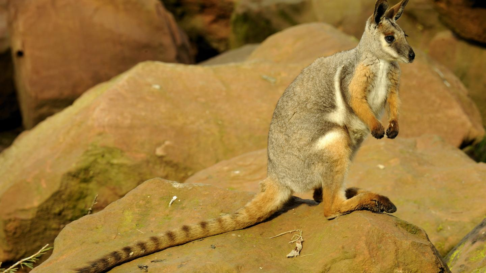
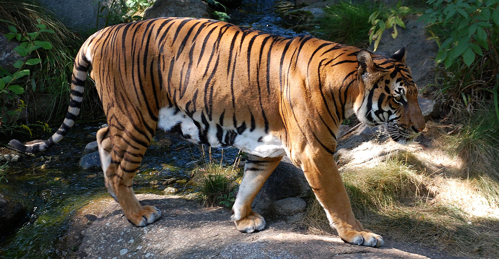
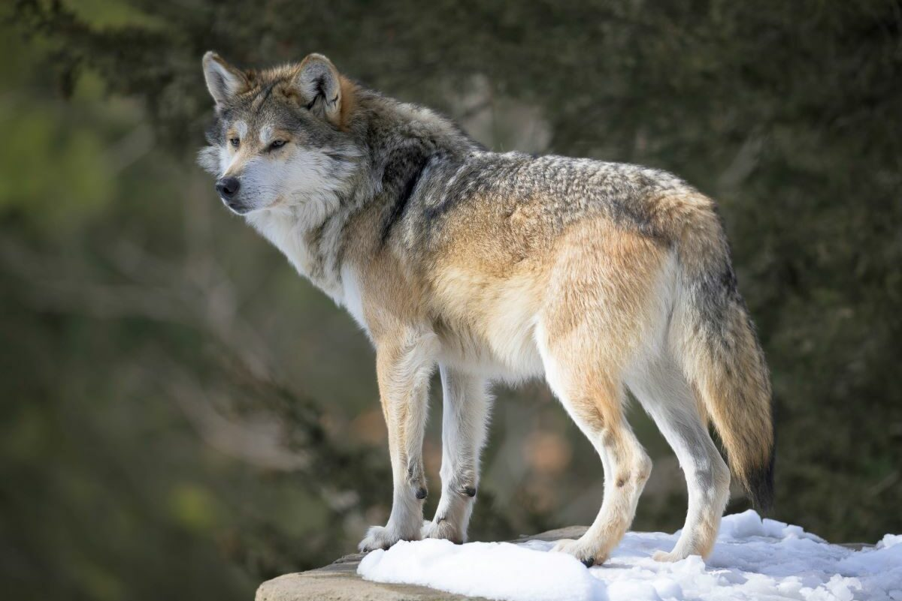
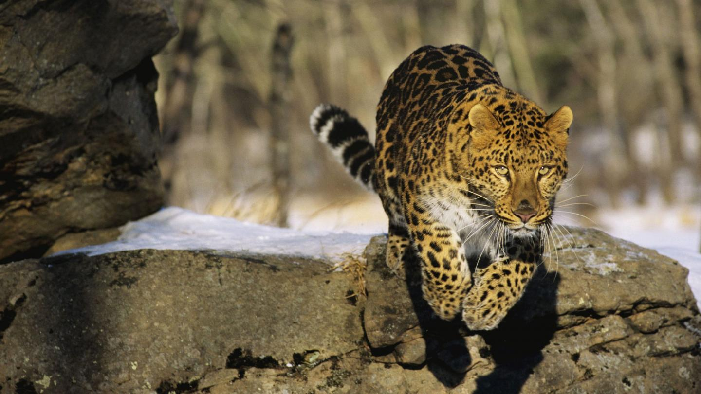
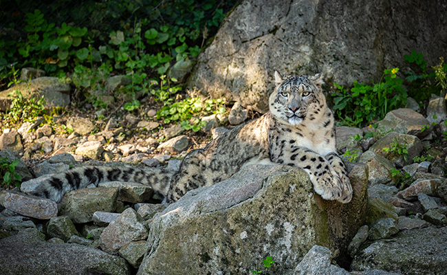

Le lynx boréal est un prédateur solitaire, actif du crépuscule au lever du soleil. Le territoire du mâle recouvre celui d'une ou plusieurs femelles. Le lynx mâle est intolérant envers les autres mâles traversant son territoire, mais ce sont les femelles qui restent les plus rancunières entre elles...

Les rhinocéros vivent normalement en solitaires mais, dans la savane, on peut parfois voir de petits troupeaux.
Ils vivent dans des prairies tropicales et subtropicales, dans la savanes, dans les forêts et dans les déserts
La journée les rhinocéros dorment, ils sont surtout actifs au crépuscule et la nuit...

C’est l’un des Marsupiaux avec la durée de gestation la plus courte. Après l'accouplement, la femelle connaît une gestation d'un mois puis le petit gagne la poche marsupiale de sa mère où il va s'allaiter et finir sa croissance...

Le tigre vit dans les forêts et dans les prairies du sud et de l’est de l’Asie, en Inde, sur l’île de Sumatra, en Chine, et à l’Est de la Russie. Un tigre vit en moyenne 16 ans à l'état sauvage. Mais on peut estimer sa durée de vie à 25 ans lorsqu'il est en captivité. C'est un félin solitaire et il aime rarement partager son territoire...

En règle générale, les loups vivent en meute, qui représente une cellule familiale. Celle-ci est menée par le couple dominant, appelé alpha. Eux seuls sont autorisés à se reproduire. Ils régissent tous les aspects de la vie de la meute : déplacements, chasse, etc...

Le léopard de l’Amour, aussi appelé panthère de l'Amour et panthère de Chine, est une sous-espèce de léopards vivant dans le sud-est de la Russie (région du Primorié) et dans le nord-est de la Chine (province du Jilin). Le léopard de l'Amour est un animal solitaire et territorial, qui choisit l'emplacement de son domaine avec beaucoup de soin...

Les panthères des neiges sont des animaux solitaires qui chassent à l'aube et au crépuscule. De la Chine à la Mongolie, en passant par le Népal et le Pakistan, le territoire de la panthère des neiges est immense, il s’étend sur plus de 1 800 000 km²...